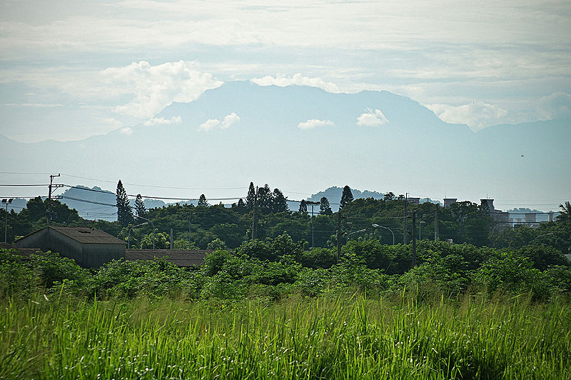

北大武山步道

北大武山（排灣語：kavulungan）位處於台灣的屏東縣與臺東縣交界，標高3,092公尺，為中央山脈南段最高峰，也是南台灣屏東地區唯一超過三千公尺的高山，故有「南台灣屏障」之稱在。在文化上，長久以來倚居在北大武山的排灣族的傳統觀念中，北大武山是排灣族的聖山，因此北大武山更成為排灣族智慧與文化的象徵。另外，在台灣百岳之中，北大武山與玉山、雪山、南湖大山、秀姑巒山合稱「五岳」，為台灣最具代表性的五座高山，氣勢磅礡，雄霸一方，在排灣文化陶冶下，淵源流長。
北大武山山形巍峨高聳，但山脊瘦峽，東西兩側峭壁絕立，猶如被切削的斷崖，由北向南望，狀如尖銳的錐形山體。
步道詳細路線 舊登山口→2【60分鐘】2K里程碑→3【30分鐘】3K里程碑→4【60分鐘】檜谷山莊→5【60分鍾】5K里程碑→6【100分鐘】7K里程碑→7【30分鐘】8K里程碑→8【50分鐘】北大武山三角點
北大武山山形巍峨高聳，但山脊瘦峽，東西兩側峭壁絕立，猶如被切削的斷崖，由北向南望，狀如尖銳的錐形山體。
步道詳細路線 舊登山口→2【60分鐘】2K里程碑→3【30分鐘】3K里程碑→4【60分鐘】檜谷山莊→5【60分鍾】5K里程碑→6【100分鐘】7K里程碑→7【30分鐘】8K里程碑→8【50分鐘】北大武山三角點